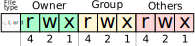

BASI DI LINUX, PARTE PRIMA
Danilo Pianini
Compiled 2025-10-24
Il sistema operativo
Strato software che si occupa di gestire l’hardware, la memoria, e i permessi, permettendo l’esecuzione concorrente di più programmi.
Tanenbaum, Modern Operating Systems 3 e, (c) 2008 Prentice-Hall, Inc. All rights reserved. 0-13-6006639
Il sistema operativo come mezzo di astrazione
Il sistema operativo nasconde i dettagli di basso livello dell’hardware, fornendo un’interfaccia più semplice
Tanenbaum, Modern Operating Systems 3 e, (c) 2008 Prentice-Hall, Inc. All rights reserved. 0-13-6006639
Kernel space e user space
I sistemi operativi moderni consentono due macro-livelli di esecuzione:
- in kernel mode, il software ha accesso diretto all’hardware e a tutte le risorse del sistema
- in user mode, il software ha accesso limitato, e deve passare per delle apposite chiamate (system call) per accedere alle risorse
Sistemi operativi diversi possono fare scelte diverse su cosa fa parte del kernel e cosa no.
- Nei sistemi a microkernel, il kernel contiene solo le funzionalità essenziali (scheduling, gestione memoria, comunicazione intra-processo), mentre tutto il resto (inclusi i device driver) eseguono in user mode.
- Alta sicurezza (un errore in un driver non compromette il sistema).
- Nei sistemi monolitici, anche servizi accessori come i driver, il file system, e la rete eseguono in kernel mode
- Maggiore efficienza (meno overhead per le system call).
- Più difficile da mantenere e debuggare.
- Nei sistemi ibridi, solo alcuni servizi accessori eseguono in kernel mode (ad esempio solo i device driver, ma non la gestione della rete).
Famiglie di sistemi operativi

UNIX, POSIX, Linux, GNU, distribuzioni
UNIX (da UNICS, “Uniplexed Information Computing System”) è un sistema operativo sviluppato negli anni ‘70 da AT&T.
POSIX (Portable Operating System Interface) è uno standard che definisce l’interfaccia di programmazione per sistemi operativi UNIX-like. Sistemi operativi che rispettano POSIX sono detti POSIX-compliant (ad esempio, Mac OS è POSIX-Compliant a partire dalla versione 10.5).
Linux è un kernel (non un sistema operativo completo) sviluppato da Linus Torvalds nel 1991.
GNU/Linux è l’insieme del kernel Linux e degli strumenti GNU (compilatore C, librerie, utility binarie, eccetera), che insieme costituiscono un sistema operativo. Sebbene non certificato POSIX, aderisce in larga parte allo standard.
Una Distribuzione Linux ( , , , , , , Arch, Gentoo… ) è l’insieme di Linux, di strumenti di contorno (solitamente GNU o BusyBox), e di software aggiuntivo (gestore di pacchetti, ambiente desktop, eccetera) che viene distribuito come un’unità.
Filosofia UNIX
- “everything is a file” (or a process)
- il file system è un albero
- il sistema è fatto da tanti piccoli programmi che fanno una cosa sola, bene
- i programmi possono essere combinati mettendo l’output di uno come input di un altro (piping)
- un linguaggio di scripting permette di combinare i programmi in workflow complessi o di comandare il sistema interattivamente tramite una shell
Permessi UNIX
Le risorse (file e processi) sono associate a un utente e a un gruppo.
Sia utenti che gruppi sono identificati da un nome alfanumerico e da un identificativo numerico.
Gli accessi a file UNIX sono quindi regolati da tre tipi di permessi: lettura, scrittura, ed esecuzione. Ciascuno di questi è associato a tre entità: il proprietario del file, il gruppo proprietario, e tutti gli altri utenti.
Esiste un utente detto root che ha accesso totale al sistema.
Il file system UNIX
A differenza di , UNIX non associa delle “lettere di unità” alle partizioni.
Il file system UNIX è un unico albero, con radice /,
vedremo poi in che modo possono essere gestiti più dispositivi senza costruire nuove radici.
I percorsi dei file sono separati da / (a differenza di , che usa \).
I percorsi dei file possono essere assoluti (partono da /) o relativi (partono dalla directory corrente).
Ad esempio, /home/user/documents/file.txt è un percorso assoluto, mentre documents/file.txt è un percorso relativo.
Nei percorsi UNIX, . rappresenta la directory corrente, e .. rappresenta la directory padre.
I file il cui nome comincia con . sono considerati nascosti.
Il file system UNIX è tipicamente case-sensitive: file.txt, File.txt, e FILE.TXT sono tre file diversi
(mentre su sarebbero considerati lo stesso file).
Si noti che esistono eccezioni:
per ragioni di compatibilità, il file system di
è case-insensitive di default.
Il terminale
Programma che permette di interagire con il S.O. mediante comandi impartiti in modalità testuale, usate:
- per automatizzare le operazioni
- per velocizzare le operazioni (scrivere un comando è spesso molto più veloce di andare a fare click col mouse in giro per lo schermo)
- per fare operazioni complesse con pochi semplici comandi
- non tutti i software sono dotati di interfaccia grafica
- alcune opzioni di configurazione del sistema operativo restano accessibili solo via linea di comando
- (anche su : ad esempio i comandi per associare le estensioni ad un eseguibile)
Sistemi *nix (Linux, MacOS X, FreeBSD, Minix…)
Nei sistemi UNIX-like esistono vari tipi di interpreti, chiamati shell
Alcuni esempi
- Bourne shell (sh)
- Prima shell sviluppata per UNIX (1977)
- C-Shell (csh)
- Sviluppata da Bill Joy per BSD
- Bourne Again Shell (bash)
- Parte del progetto GNU, è un super set di Bourne shell
- ZSH, Fish, e altri terminali di ultima generazione
- Altamente personalizzabili
- Molto flessibili
- Autocompletamento avanzato e contestualità
- ZSH è default su , seppur con configurazione minimale
- La shell che vedrete sul sistema del docente è ZSH con configurazione personalizzata
Panoramica delle differenze: http://www.faqs.org/faqs/unix-faq/shell/shell-differences/
Sistemi Windows
L’interprete comandi storico è rappresentato dal programma cmd.exe (C:\Windows\System32\cmd.exe)
- Eredita sintassi e funzionalità della maggior parte dei comandi del vecchio MSDOS
Versioni recenti hanno introdotto PowerShell, basato su .NET e C#
Da Windows 10 è possibile installare Linux dentro Windows usando Windows Subsystem for Linux (WSL2)
- Può essere un modo ragionevole di avere shell Unix in ambiente Windows
Manipolazione di base del file system
Directory corrente: pwd
All’apertura, e in qualunque momento, il terminale si trova in una directory (cartella) del file system.
Normalmente, alla sua apertura, si trova nella home directory dell’utente.
Possiamo sempre sapere in che directory ci troviamo con il comando pwd (print working directory).
$ pwd
/home/danysk/LocalProjects
Manipolazione di base del file system
Elencare il contenuto della directory corrente: ls
Il comando ls (list) permette di elencare il contenuto della directory corrente.
$ ls
LICENSE assets config.toml layouts resources shared-slides themes
archetypes build content renovate.json scm.md static
Di default, omette i file nascosti, che possono essere visualizzati con l’opzione -a (all).
$ ls -a
. .gitignore LICENSE config.toml resources themes
.. .gitmodules archetypes content scm.md
.git .hugo_build.lock assets layouts shared-slides
.github .mergify.yml build renovate.json static
Notate che appaiono anche le directory . e .. che rappresentano rispettivamente la directory corrente e la directory padre.
Manipolazione di base del file system
Visione dettagliata: opzione -l di ls
L’opzione -l di ls mostra anche permessi, dimensione e data di ultima modifica di ogni elemento.
$ ls -l
total 60
-rw-r--r-- 1 danysk danysk 11344 Aug 5 11:19 LICENSE
drwxr-xr-x 2 danysk danysk 4096 Aug 5 11:19 archetypes
drwxr-xr-x 2 danysk danysk 4096 Aug 5 11:19 assets
drwxr-xr-x 8 danysk danysk 4096 Aug 5 11:58 build
-rw-r--r-- 1 danysk danysk 1842 Aug 5 11:27 config.toml
drwxr-xr-x 3 danysk danysk 4096 Aug 5 11:58 content
drwxr-xr-x 4 danysk danysk 4096 Aug 5 11:19 layouts
-rw-r--r-- 1 danysk danysk 124 Aug 5 11:19 renovate.json
drwxr-xr-x 3 danysk danysk 4096 Aug 5 11:45 resources
-rw------- 1 danysk danysk 2807 Aug 5 11:33 scm.md
drwxr-xr-x 10 danysk danysk 4096 Aug 5 11:26 shared-slides
drwxr-xr-x 2 danysk danysk 4096 Aug 5 11:19 static
drwxr-xr-x 3 danysk danysk 4096 Aug 5 11:19 themes
Manipolazione di base del file system
Capire i permessi
I permessi sono rappresentati da 10 caratteri, divisi in 4 gruppi:
- il primo carattere indica il tipo di file (
d: directory,-: file,l: link simbolico) - i successivi tre gruppi di tre caratteri indicano i permessi per, rispettivamente, il proprietario, il gruppo, e tutti gli altri utenti

Esempi:
drwxr-xr-xdirectory scrivibile da owner e visibile a tutti-rw-------file accessibile e modificabile solo da owner-rwxr-xr-xfile eseguibile da tutti, modificabile da owner-rwxrwxrwxfile eseguibile e modificabile da tutti
I permessi sono anche detti ottali, perché possono essere rappresentati come un numero in base 8 (cifre da zero a 7) ottenuto concatenando i permessi dei tre gruppi.
Manipolazione di base del file system
Formato ottale dei permessi
Esempi:
rw-------$\Rightarrow$600rwxr-xr-x$\Rightarrow$755rwxrwxrwx$\Rightarrow$777rw-r--r--$\Rightarrow$644rw-rw-rw-$\Rightarrow$666
| Permesso | Valore ottale | Valore binario |
|---|---|---|
--- |
0 | 000 |
--x |
1 | 001 |
-w- |
2 | 010 |
-wx |
3 | 011 |
r-- |
4 | 100 |
r-x |
5 | 101 |
rw- |
6 | 110 |
rwx |
7 | 111 |
Manipolazione di base del file system
Dimensioni più comprensibili: opzione -h di ls
L’opzione -h di ls mostra la dimensione in formato “human-readable”,
e funziona solo assieme a -l.
$ ls -lh
total 60K
-rw-r--r-- 1 danysk danysk 12K Aug 5 11:19 LICENSE
drwxr-xr-x 2 danysk danysk 4,0K Aug 5 11:19 archetypes
drwxr-xr-x 2 danysk danysk 4,0K Aug 5 11:19 assets
drwxr-xr-x 8 danysk danysk 4,0K Aug 5 11:58 build
-rw-r--r-- 1 danysk danysk 1,8K Aug 5 11:27 config.toml
drwxr-xr-x 3 danysk danysk 4,0K Aug 5 11:58 content
drwxr-xr-x 4 danysk danysk 4,0K Aug 5 11:19 layouts
-rw-r--r-- 1 danysk danysk 124 Aug 5 11:19 renovate.json
drwxr-xr-x 3 danysk danysk 4,0K Aug 5 11:45 resources
-rw------- 1 danysk danysk 2,8K Aug 5 11:33 scm.md
drwxr-xr-x 10 danysk danysk 4,0K Aug 5 11:26 shared-slides
drwxr-xr-x 2 danysk danysk 4,0K Aug 5 11:19 static
drwxr-xr-x 3 danysk danysk 4,0K Aug 5 11:19 themes
Manipolazione di base del file system
Dettagli completi: ls -ahl
le tre opzioni a, l, ed h possono (e solitamente sono) utilizzate all’unisono.
$ ls -alh
total 88K
drwxr-xr-x 13 danysk danysk 4,0K Aug 5 12:05 .
drwxr-xr-x 108 danysk danysk 4,0K Aug 5 11:19 ..
drwxr-xr-x 9 danysk danysk 4,0K Aug 6 11:57 .git
drwxr-xr-x 3 danysk danysk 4,0K Aug 5 11:19 .github
-rw-r--r-- 1 danysk danysk 65 Aug 5 11:19 .gitignore
-rw-r--r-- 1 danysk danysk 217 Aug 5 11:19 .gitmodules
-rw-r--r-- 1 danysk danysk 0 Aug 5 11:45 .hugo_build.lock
-rw-r--r-- 1 danysk danysk 24 Aug 5 11:19 .mergify.yml
-rw-r--r-- 1 danysk danysk 12K Aug 5 11:19 LICENSE
drwxr-xr-x 2 danysk danysk 4,0K Aug 5 11:19 archetypes
drwxr-xr-x 2 danysk danysk 4,0K Aug 5 11:19 assets
drwxr-xr-x 8 danysk danysk 4,0K Aug 5 11:58 build
-rw-r--r-- 1 danysk danysk 1,8K Aug 5 11:27 config.toml
drwxr-xr-x 3 danysk danysk 4,0K Aug 5 11:58 content
drwxr-xr-x 4 danysk danysk 4,0K Aug 5 11:19 layouts
-rw-r--r-- 1 danysk danysk 124 Aug 5 11:19 renovate.json
drwxr-xr-x 3 danysk danysk 4,0K Aug 5 11:45 resources
-rw------- 1 danysk danysk 2,8K Aug 5 11:33 scm.md
drwxr-xr-x 10 danysk danysk 4,0K Aug 5 11:26 shared-slides
drwxr-xr-x 2 danysk danysk 4,0K Aug 5 11:19 static
drwxr-xr-x 3 danysk danysk 4,0K Aug 5 11:19 themes
Manipolazione di base del file system
modifica della working directory: cd
È possibile spostarsi da una directory all’altra con il comando cd (change directory),
che prende un solo argomento: il percorso della directory di destinazione,
relativo o assoluto.
Se non viene specificato un percorso, cd porta alla home directory dell’utente corrente
(directory identificata anche dal simbolo speciale ~).
$ pwd
/home/danysk/LocalProjects
$ cd myFolder
$ pwd
/home/danysk/LocalProjects/myFolder
Dato che .. è la directory padre,
è possibile tornare alla directory precedente con cd ..
$ pwd
/home/danysk/LocalProjects/myFolder
$ cd ..
$ pwd
/home/danysk/LocalProjects
Manipolazione di base del file system
Aggiornamento della data di ultima modifica: touch
Il comando touch permette di aggiornare la data di ultima modifica di un file al momento corrente.
$ ls -l
-rw-r--r-- 1 danysk danysk 12K Aug 5 11:19 LICENSE
$ date
2024-08-06T14:25:21 CEST
$ touch LICENSE
$ ls -l
-rw-r--r-- 1 danysk danysk 12K Aug 6 14:25 LICENSE
L’utilizzo più comune di touch, però, è la creazione di un file vuoto: è sufficiente “toccare” un file che non esiste.
$ ls -alh
total 8,0K
drwxr-xr-x 2 danysk danysk 4,0K Aug 6 14:29 .
drwxr-xr-x 14 danysk danysk 4,0K Aug 6 14:28 ..
$ touch mynewfile
$ ls -alh
total 8,0K
drwxr-xr-x 2 danysk danysk 4,0K Aug 6 14:29 .
drwxr-xr-x 14 danysk danysk 4,0K Aug 6 14:28 ..
-rw-r--r-- 1 danysk danysk 0 Aug 6 14:29 mynewfile
Manipolazione di base del file system
Costruzione di nuove directory: mkdir
Il comando mkdir (make directory) permette di creare una nuova directory.
Prende in ingresso un solo argomento: il percorso della directory da creare.
Il comando è in grado di creare anche directory annidate, se viene specificata l’opzione -p.
$ ls -alh
total 8,0K
drwxr-xr-x 2 danysk danysk 4,0K Aug 6 14:30 .
drwxr-xr-x 14 danysk danysk 4,0K Aug 6 14:28 ..
$ mkdir ciao
$ mkdir -p pippo/pluto/paperino
$ ls -alh
total 16K
drwxr-xr-x 4 danysk danysk 4,0K Aug 6 14:32 .
drwxr-xr-x 14 danysk danysk 4,0K Aug 6 14:28 ..
drwxr-xr-x 2 danysk danysk 4,0K Aug 6 14:32 ciao
drwxr-xr-x 3 danysk danysk 4,0K Aug 6 14:32 pippo
Manipolazione di base del file system
Copia di file e directory: cp
Il comando cp (copy) permette di copiare file e directory.
Prende due argomenti: il percorso del file o della directory da copiare, e il percorso di destinazione.
Nel caso in cui si voglia copiare una directory, è necessario specificare l’opzione -r (recursive).
Rimozione di file e directory: rm
Il comando rm (remove) permette di rimuovere file e directory.
Prende un numero arbitrario di argomenti, e li rimuove.
Per rimuovere una directory ed i suoi contenuti, è necessario specificare l’opzione -r (recursive).
Rinominare (spostare) file e directory: mv
Il comando mv (move) permette di rinominare file e directory
(equivalente a spostarli in un’altra posizione).
Prende due argomenti: il percorso del file o della directory da rinominare, e il percorso di destinazione.
Wildcards
Le wildcards sono caratteri speciali che permettono di specificare insiemi di file o directory, indicando che al loro posto può essere sostituito un qualunque carattere.
?– un singolo carattere, escluso/*– una sequenza di zero o più caratteri, escluso/**– non standard: dipendentemente dalla shell, potrebbe essere disattivata (è il caso dibashedsh), e quindi equivalente a*(perché una sequenza di zero o più caratteri seguita da una sequenza di zero o più caratteri è essa stessa una sequenza di zero o più caratteri), oppure indicare che nella sequenza è incluso il carattere/, ossia che la ricerca avviene ricorsivamente (è il caso dizsh).
Strumenti di base del terminale
Pulizia dello schermo: clear
Il comando clear permette di pulire il terminale, spostando in alto la schermata.
Storia dei comandi: history e ricerca: CtrlR
Le shell UNIX mantengono una storia dei comandi eseguiti.
Consultare la storia è molto utile,
consente di richiamare velocemente comandi eseguiti in precedenza.
Ciascuna shell salva la storia per ogni utente su un file nascosto nella home directory (.bash_history per bash, .zhistory per zsh).
Indipendentemente da quale file la contiene,
la storia può essere visualizzata con il comando history.
Inoltre, è possibile cercare rapidamente nella storia con CtrlR (reverse search). Gli ultimi comandi possono essere scorsi con (previous) e (next).
I comandi possono essere modificati a piacimento, e lanciati con .
Strumenti di base del terminale
Copia-incolla col mouse
Sugli emulatore di terminale moderni, è possibile copiare e incollare con il mouse:
- selezionare il testo usando il mouse, tasto sinistro
- posizionare il cursore dove si vuole incollare usando la tastiera
- premere il tasto centrale del mouse per incollare
ATTENZIONE: CtrlC e CtrlV non funzionano in terminale! Specialmente, il primo fa tutt’altro, vedremo poi. Molti emulatori di terminale supportano però il copia-incolla tramite tastiera usando:
- CtrlShiftC dopo aver selezionato il testo col mouse, e
- CtrlShiftV per incollare.
Standard input, output, ed error
I programmi UNIX comunicano con l’ambiente esterno attraverso tre canali standard, di cui uno in input e due in output:
- standard input (
stdin), per comandi lanciati da terminale, di default è l’input che viene dato da tastiera al terminale dopo il lancio del programma - standard output (
stdout), per comandi lanciati da terminale, di default è il testo che appare sul terminale stesso - standard error (
stderr), usato per i messaggi di errore; di default configurato come standard errror (stampa a terminale)
Teletypewriter: il terminale come file
In realtà, i tre canali sono file:
poiché il terminale stesso è modellato come device file
(d’altronde, in UNIX, tutto è un file o un processo).
Il file che rappresenta il terminale può essere recuperato col comando tty (teletype),
e su è tipicamente /dev/pts/N (con N numero intero positivo che rappresenta l’identificativo del terminale).
Di default, stdin, stdout e stderr sono associati al device file del terminale che li ha lanciati.
Standard input, output, ed error
Redirezione base
Attraverso la redirezione è possibile far puntare i canali a file diversi da quello originale:
>redirigestdoutverso l’inizio di un file (ossia, lo sovrascrive)>>redirigestdoutverso la fine di un file (ossia, aggiunge elementi in coda)<redirigestdinda un file
Redirezione di stream specifici
Abbiamo visto che > e >> redirigono stdout,
ma come possiamo redirigere stderr?
In realtà, l’operatore di redirezione > è un’abbreviazione per 1>: la redirezione comincia con il numero del file descriptor dello stream da ridirezionare.
Ognuno degli stream standard ha un file descriptor associato:
0perstdin1perstdout2perstderr
Dunque 0< equivale a <, 1> equivale a >, e 2> redirige stderr.
Se si volesse che un comando salvasse i messaggi di errore su error.log, e i messaggi di output su output.log, si potrebbe fare così:
my_command > output.log 2> error.log
Standard input, output, ed error
Redirezione unione
L’operatore >& permette di unire assieme due canali di output,
redirezionandone uno su un altro.
È possibile, ad esempio, redirigere stderr verso stdout con 2>&1,
ad esempio perché si vuole che entrambi appaiano in un solo file di log:
my_command > output.log 2>&1
diversamente, lo stream di errore resterebbe agganciato al device file del terminale!
Piping
L’operatore | permette di concatenare due comandi, facendo sì che l’output di uno diventi l’input dell’altro.
Scrivendo, ad esempio, ls | my_command, l’output di ls diventa l’input di my_command, come se l’avessimo avviato ed avessimo messo in input la stringa prodotta da ls.
Nota: | collega input e output, non passa degli argomenti!
Interazione con la shell
Stampa di un messaggio: echo
Il comando echo permette di stampare un messaggio a schermo.
Prende un numero arbitrario di argomenti, e li stampa separati da uno spazio.
Il comando è molto utile per inizializzare file con un certo contenuto, oppure per aggiungere un messaggio a un file di log.
Concatenazione di file: cat
Il comando cat (concatenate) permette di concatenare file.
Prende un numero arbitrario di argomenti, e li restituisce concatenati in uscita.
Il comando è molto utile per visualizzare il contenuto di un file.
$ echo "Hello, world!" > hello.txt
$ cat hello.txt
Hello, world!
$ echo "Hello, world! 2" >> hello.txt
$ cat hello.txt
Hello, world!
Hello, world! 2
Interazione con la shell
Paginazione di un file: less
Il comando less permette di visualizzare un file a schermo, paginato, ossia,
mostrando una pagina alla volta e permettendo di scorrere avanti e indietro.
Si esce dalla modalità di visualizzazione premendo Q.
Intestazione di un file: head
Il comando head permette di visualizzare le prime 10 righe di un file.
Il comportamento può essere modificato con l’opzione -n, che permette di specificare il numero di righe da visualizzare.
Coda di un file: tail
Il comando tail permette di visualizzare le ultime 10 righe di un file.
Anche in questo caso, il comportamento può essere modificato con l’opzione -n.
Inoltre, tail permette di “seguire” un file,
ossia di visualizzare le righe che vengono aggiunte in tempo reale.
La modalità “fetch” di tail è attivata con l’opzione -f.
Analisi e ricerca nel file system
Dimensione di una directory: du
Il comando du (disk usage) permette di calcolare la dimensione di una directory e dei suoi contenuti.
Prende un numero arbitrario di argomenti, e restituisce la dimensione di ciascuno di essi.
L’opzione -h permette di visualizzare la dimensione in formato “human-readable”.
Ricerca di file e directory: find
Il comando find permette di cercare file nel file system.
Prende un numero arbitrario di argomenti, e restituisce i file che soddisfano i criteri di ricerca specificati.
L’opzione -name permette di cercare file per nome.
L’opzione -type permette di cercare file per tipo.
Esempi
$ find /home/utente -type f -name "documento.txt" # Cerca un file col nome esatto "documento.txt"
$ find /home/utente -type d -name "progetti" # Cerca una directory col nome esatto "progetti"
$ find /home/utente -type f -name "*.txt" # Cerca tutti i file con estensione .txt (si possono usare i glob!)
Analisi e ricerca nel file system
Ricerca del file che implementa un comando: which
Il comando which permette di trovare il percorso di un eseguibile.
Prende un numero arbitrario di argomenti, e per ciascuno restituisce il percorso dell’eseguibile che implementa il comando specificato (se esiste).
$ which cat echo intellij-idea-ultimate-edition pippo
/usr/bin/cat
echo: shell built-in command
/usr/bin/intellij-idea-ultimate-edition
pippo not found
Struttura del file system Linux
Collegamenti simbolici
Un collegamento simbolico (o link simbolico) è un file speciale che punta ad un altro file o directory.
Il comportamento è analogo a quello di un collegamento in Windows (file .lnk), ma è più potente:
- è gestito a livello di file system, mentre su Windows i file
.lnksono tipicamente scorciatoie per il file manager - non ha obbligo di estensione, è un alias e non una scorciatoia
Creazione di un collegamento simbolico: ln -s
Il comando ln (link) permette di creare collegamenti simbolici.
L’opzione -s (symbolic) permette di creare un collegamento simbolico.
Sintassi: ln -s file-target file-link crea un nuovo collegamento simbolico file-link che punta a file-target.
Quando si utilizza ls -l,
i collegamenti simbolici sono riconoscibili dal fatto che il nome del file è preceduto da ->.
Terminare input e processi da terminale
Se un processo resta in attesa sul terminale, i casi più comuni sono:
- il processo è in attesa di input
- il processo è sospeso in una sleep
- il processo è in un loop che non termina
Inviare una end-of-file
Nel primo caso, si può inviare un carattere speciale detto
EOF (end-of-file) per terminare l’input.
Per farlo, premere CtrlD
Inviare un segnale SIGINT
Nel secondo e terzo caso, si può inviare un segnale di interruzione (SIGINT) che richiede al processo di terminare.
Il segnale si invia premendo CtrlC
Filtri UNIX
In UNIX, i processi che lavorano su input e producono output sono chiamati filtri.
Il loro utilizzo tipico è quello di essere usati in catene,
separate da | (pipe),
per trasformare l’output di un comando precedente.
Filtraggio di base con grep
Un esempio di filtro è grep, che permette di filtrare righe di testo in base a un pattern.
grep prende un pattern da cercare in input, e restituisce le righe che contengono il pattern.
$ cat commedia.txt | grep Caron
E 'l duca lui: "Caron, non ti crucciare:
Caron dimonio, con occhi di bragia,
e però, se Caron di te si lagna,
- L’opzione
-vpermette di invertire il filtro, mostrando le righe che non contengono il pattern. - L’opzione
-npermette di mostrare il numero di riga. - L’opzione
-cpermette di mostrare il numero di occorrenze.
Ad esempio, possiamo scoprire quante righe nel della Divina Commedia non contengono nè la lettera s nè la lettera t
(si noti che il comando è case-sensitive):
$ grep -v s < commedia.txt | grep -v t | grep -v S | grep -v T -c
559
grep supporta il filtraggio utilizzando Espressioni Regolari (regex), che non copriamo in questo corso.
Filtri UNIX
Trasformazione di output in argomenti: xargs
Il comando xargs permette di trasformare l’output di un comando in argomenti di un altro.
Per questo viene utilizzato spesso in combinazione con find.
Esempio
Stampa a schermo del contenuto di tutti i file che si chiamano info.log nella home directory dell’utente e nelle sue sottodirectory:
$ find ~ -type f -name "info.log" | xargs cat
Esercizio
Data una directory in /log/my_app con struttura non nota,
stampare tutte le righe di tutti i file .log che contengono la parola ERROR.
Suggerimento: usare find e cat con grep.
$ find /log/my_app -type f -name "*.log" | xargs cat | grep ERROR
Manualistica e informazioni
Ricordarsi a memoria comandi e opzioni è difficile, specialmente quando non vengono utilizzati quotidianamente.
Per questo, è importante sapere come ottenere informazioni sui comandi e sulle opzioni. Fortunatamente, UNIX ha un sistema di manualistica integrato.
Cosa fa un comando? whatis
Il comando whatis permette di ottenere una descrizione molto breve di un comando.
$ whatis ls
ls (1) - list directory contents
$ whatis whatis
whatis (1) - display one-line manual page descriptions
Manuale completo: man
Il comando man permette di visualizzare il manuale completo di un comando.
Ricerca di comandi: apropos
Data una parola chiave, il comando apropos permette di cercare comandi che la contengono
(cercando nei titoli dei manuali).
Utenti, gruppi, e permessi
Come abbiamo visto, in UNIX ogni file e processo ha un utente “owner”, ed ogni file e directory ha, in aggiunta dei permessi di lettura, scrittura, ed esecuzione per possessore, gruppo possessore, e per tutti gli altri.
Riuscire a manipolare gruppi, utenti, e permessi è quindi fondamentale per gestire un sistema UNIX.
Chi è loggato? who
Il comando who permette di ottenere la lista degli utenti loggati nel sistema.
Cambiare il possessore di un file: chown
Il comando chown (change owner) permette di cambiare il possessore di un file.
L’opzione -R permette di cambiare il possessore di una directory e di tutti i suoi contenuti.
Utilizzo: chown [opzioni] nuovo_possessore file
Utenti, gruppi, e permessi
Cambiare permessi: chmod
Abbiamo visto in precedenza come sono strutturati i permessi di un file, e ne abbiamo visto la rappresentazione ottale.
Il comando chmod (change mode) permette di cambiare questi permessi (ammesso che l’utente abbia diritti di scrittura sul file in esame).
Utilizzo: chmod [opzioni] permessi_ottali file
L’opzione -R permette di cambiare i permessi di una directory e di tutti i suoi contenuti.
NOTA: per le cartelle, il permesso di esecuzione è necessario per poterla attraversare.
Esempi:
- Rendere un file eseguibile da chiunque:
chmod 777 file - Rendere un file eseguibile da tutti e scrivibile solo da owner:
chmod 755 file - Rendere il file leggibile e scrivibile solo da owner:
chmod 600 file
Utenti, gruppi, e permessi
Privilege escalation: sudo
Il comando sudo (superuser do) permette di eseguire un comando come un altro utente (di default, root).
Perché un utente possa usare sudo, deve essere incluso nel file /etc/sudoers (o in un file incluso da esso).
A meno che non sia configurato diversamente in /etc/sudoers, sudo richiede la password dell’utente corrente.
È possibile anche lanciare un terminale come utente root con sudo -i.
Da questo momento, negli specchietti col codice il simbolo $ indicherà comandi lanciati da un utente normale,
mentre # indicherà che il comando è eseguito come root
(e quindi o è premesso da sudo, oppure è eseguito in un terminale privilegiato).
Utenti, gruppi, e permessi
Creare un nuovo utente: useradd
Il comando useradd permette di creare un nuovo utente.
Utilizzo: useradd [opzioni] nome_utente
L’opzione -m permette di creare la home directory per l’utente, copiandola da /etc/skel.
L’opzione -G permette di aggiungere l’utente a uno o più gruppi, separati da , (senza spazi).
L’opzione -s permette di specificare la shell di default per l’utente.
Esempio:
Creazione di un utente pluto, appartenente ai gruppi
lp (stampanti),
audio (audio),
docker (uso di Docker),
e wheel (amministratori),
con shell di default bash
e home directory popolata a partire dal contenuto di /etc/skel:
# useradd -m -G lp,audio,docker,wheel -s /bin/bash pluto
Utenti, gruppi, e permessi
Settare o cambiare la password di un utente: passwd
Alla creazione, un utente non ha una password, il che significa che non può fare il login.
Per alcuni utenti “di servizio” (come nobody o daemon) questo è desiderabile,
ma per account che richiedono un effettivo login è necessario settare una password.
Il comando passwd permette di settare o cambiare la password di un utente.
Il comando prende un solo argomento opzionale,
che è il nome dell’utente di cui cambiare la password.
Se viene omesso, passwd cambia la password dell’utente corrente.
Per cambiare la password di un utente, è necessario essere root o l’utente stesso.
passwd chiederà la vecchia password (se l’utente è diverso da root),
e poi chiederà due volte la nuova password,
cambiandola solo se le due corrispondono.
Utenti, gruppi, e permessi
Impersonificare un utente: su
Il comando su (switch user) permette di impersonare un altro utente.
Il comando prende un solo argomento, che è il nome dell’utente da impersonare.
Se viene omesso, su impersona l’utente root.
su chiederà la password dell’utente da impersonare,
a meno che l’utente corrente sia root,
quindi, aprirà un nuovo terminale con l’utente impersonato.
Chi sono? whoami
Dacchè è possibile impersonare altri utenti, potrebbe essere non chiaro chi sia l’utente corrente.
Il comando whoami permette di ottenere il nome dell’utente corrente.
Utenti, gruppi, e permessi
Creare un nuovo gruppo: groupadd
Il comando groupadd permette di creare un nuovo gruppo.
Utilizzo: groupadd nome_gruppo
Modifica di utenti: usermod
Il comando usermod permette di modificare le proprietà di un utente.
Utilizzo: usermod [opzioni] nome_utente
Le opzioni sono simili a quelle di useradd.
Per aggiungere gruppi all’utente, si può usare l’opzione -aG: usare -G invece sostituisce i gruppi esistenti con i nuovi.
Processi, segnali, e loro gestione
Identificatore di processo: PID
Ogni processo in un sistema UNIX-like ha un identificatore numerico univoco, chiamato PID (Process IDentifier).
Il PID è un numero intero positivo, e viene assegnato in ordine crescente ad ogni processo che viene creato.
Il PID del processo corrente può essere ottenuto con il comando echo $$.
Stato corrente dei processi: ps
Il comando ps (Process Status) permette di ottenere informazioni sui processi attivi.
Di default, ps mostra i processi attivi dell’utente corrente.
ps senza opzioni mostra i processi dell’utente corrente associati al terminale su cui ps viene lanciato.
ps a mostra i processi di tutti gli utenti.
ps u mostra le informazioni in formato user-oriented.
ps x mostra informazioni sui processi che non hanno un terminale di controllo (background, demoni, servizi)
Le tre opzioni vengono tipicamente combinate: ps aux
Processi, segnali, e loro gestione
Segnali in UNIX
UNIX consente ai processi di inviare segnali ad altri processi.
I segnali sono numerici, e ciascuno ha un significato specifico.
Quelli più rilevanti per noi sono:
SIGINT(2) – segnale che viene inviato alla pressione di CtrlC, che chiede al processo di terminare ordinatamente (simile aSIGTERM)SIGTERM(15) – segnale di terminazione, che chiede al processo di terminare ordinatamenteSIGKILL(9) – segnale di terminazione forzata, che termina il processo immediatamenteSIGSTOP(19) – segnale di pausa del processo, che lo sospende senza terminarloSIGCONT(18) – segnale di continuazione del processo, che lo fa ripredere se attualmente sospeso
Processi, segnali, e loro gestione
Invio di segnali ai processi: kill
A dispetto del nome, il comando kill non “uccide” i processi, ma permette di inviare loro segnali.
Sintassi: kill [opzioni] PID.
Se nessuna opzione viene specificata, al processo target viene inviato un segnale SIGTERM.
Può essere inviato un segnale diverso sostituendo SIG con -, per esempio: kill -KILL 6754 manda un SIGKILL al processo con PID 6754.
Con l’opzione -s, è possibile inviare un segnale in base al suo numero.
Il comando precedente è equivalente a kill -s 9 6754
Invio di segnali a processi usando il nome: killall
Il comando killall è simile a kill, ma invece di prendere un PID,
prende un nome di processo e invia il segnale a tutti i processi che corrispondono a quel nome
Secure shell
Secure Shell (SSH) è un protocollo di rete che permette di accedere a un computer remoto in maniera sicura.
Permette di:
- aprire una shell remota, e quindi fare amministrazione da remoto
- incluso l’inoltro di informazioni grafiche
- trasferire file in maniera sicura
- costruire un tunnel sicuro per trasferire traffico non sicuro
È composto di due parti:
- Un server,
sshd, che ascolta di default sulla porta 22 (ma può essere configurato per usarne un’altra) - Un client,
ssh, che permette di aprire una shell remota su un sistema dovesshdsia in esecuzione
In questo corso base, ci concentreremo sul client.
Secure shell
Connessione a un server remoto: ssh
Il comando ssh permette di aprire una shell remota su un server.
Sintassi: ssh utente@indirizzo-server
- L’utente è opzionale. Se non specificato, viene usato il nome dell’utente corrente.
- L’indirizzo del server può essere un nome di dominio o un indirizzo IP
- Se il server remoto è in ascolto su una porta diversa dalla
22, occorre specificarla con l’opzione-p- Esempio:
ssh -p 2222 utente@indirizzo-server
- Esempio:
All’arrivo di una richiesta di apertura di una sessione, il server tenterà di autenticare l’utente.
La configurazione del server può cambiare, normalmente i metodi di autenticazione sono:
- chiave pubblica/privata
- password
Il primo metodo è considerato, più sicuro, ma può essere meno pratico.
Secure shell
Crittografia a chiavi asimmetriche
L’autenticazione a chiavi asimmetriche è un meccanismo di riconoscimento che si basa su due codici (chiavi):
- una chiave pubblica, che può essere distribuita liberamente
- una chiave privata, che deve essere mantenuta segreta
Il meccanismo funziona come segue:
- Un’informazione può essere cifrata con ciascuna delle due chiavi
- L’informazione cifrata con una delle due chiavi può essere decifrata solo con l’altra chiave
Utilizzando opportunamente le due chiavi, la crittazione asimmetrica consente di implementare:
- invio di messaggi firmati (autenticazione)
- invio di messaggi segreti
- invio di messaggi segreti e firmati
Secure shell
Esempi con crittografia a chiavi asimmetriche
Alcuni esempi, usando la notazione seguente:
rappresenta i dati non cifrati, e rappresentano le chiavi pubblica e privata rispettivamente, - i simboli
e i dati cifrati con le medesime.
Valgono le seguenti proprietà:
+ = messaggio segreto per il possessore della chiave + = messaggio firmato dal possessore della chiave + = decrittazione di un messaggio segreto + = verifica della firma (chiunque può controllare )
Si noti che utilizzando solo la chiave pubblica
Secure shell
Configurazione delle chiavi asimmetriche
Lo strumento per generare le chiavi asimmetriche è ssh-keygen.
Nota: qui si mostra la generazione di una chiave con impostazioni di default. Per un uso sicuro, si consiglia di seguire le moderne pratiche di sicurezza.
Una chiave di default può essere generata lanciando semplicemente ssh-keygen,
confermando i default proposti.
Se viene inserita una password, la chiave privata sarà cifrata e richiederà la password per essere utilizzata.
È possibile creare chiavi prive di password semplicemente non inserendola.
Al termine dell’operazione, la chiave pubblica ~/.ssh/id_rsa.pub.
Nella stessa cartella si troverà la chiave privata ~/.ssh/id_rsa.
La chiave privata non va mai condivisa, mentre quella pubblica può essere distribuita agli amministratori dei sistemi cui dobbiamo avere accesso.
Per autorizzare una chiave SSH all’ingresso di un server, è sufficiente aggiungerla al file ~/.ssh/authorized_keys del server
(va quindi fatta da qualcuno che abbia accesso alla macchina server con diritti amministrativi).
Una volta fatto, sarà possibile accedere al server senza alcuna password (eccetto quella necessaria a decrittare la propria chiave privata, se è stata inserita in fase di configurazione).
Secure shell
Autenticazione tramite password
L’autenticazione tramite password non richiede alcuna configurazione.
Se l’autenticazione tramite chiavi, che viene tentata per prima perché più sicura, non ha successo, allora viene chiesto l’inserimento della password dell’utente remoto.
La password che va inserita è quella dell’utente remoto, esattamente come verrebbe chiesta se ci si loggasse direttamente sul server.
[pluto@notebook ~]$ whoami
pluto
[pluto@notebook ~]$ ssh pippo@my-server.my-domain.com
Password: ******** # Password di pippo, non di pluto
[pippo@server ~]$ whoami
pippo
Secure shell
Configurazione di SSH
SSH ed il demone sshd sono configurabili tramite file di configurazione che si trovano in /etc/ssh.
ssh_configè il file di configurazione del clientsshd_configè il file di configurazione del server
I file sono ben commentati, e la configurazione di default è generalmente sufficiente per la maggior parte degli utilizzi.
Per modificare la configurazione, è necessario avere i diritti di amministratore.
X forwarding
Se il server è configurato per supportarlo (impostazione disattivata di default), è possibile lanciare programmi grafici remotamente e visualizzarli localmente.
Per farlo, si deve lanciare ssh con l’opzione -X o -Y (si raccomanda la seconda).
Secure shell
Copia di file tramite SSH: scp
Un utilizzo molto comune di SSH è la copia di file da e verso un server remoto tramite il protocollo SFTP (Secure File Transfer Protocol).
Il comando scp (secure copy) permette di copiare file da e verso un server remoto
passando attraverso una connessione sicura SSH.
Sintassi: scp [opzioni] file_origine file_destinazione
dove file_origine e file_destinazione possono essere:
- file locali (quindi percorsi assoluti o relativi) o
- file remoti, con formato
utente@server:percorso- In questo caso,
percorsodeve essere assoluto, oppure relativo a partire dalla home directory dell’utente remoto
- In questo caso,
Esercizio
- Ispezionare localmente la configurazione sshd del server remoto
my-server.my-domain.com, dove sono configurati gli utentiusereroot, dei quali si conosce la password. copiando localmente il file che la contiene. - Assumendo che la configurazione sia stata modificata, copiare il file modificato sul server remoto.
$ scp user@my-server.my-domain.com:/etc/ssh/sshd_config server_sshd_config
$ # Modifica il file
$ scp server_sshd_config root@my-server.my-domain.com:/etc/ssh/sshd_config
- Perché sono stati usati due utenti diversi?
-
Cosa sarebbe successo se si fosse usato sempre
root? -
Cosa sarebbe successo se si fosse usato
userper entrambe le operazioni?
Secure shell
Client grafico multipiattaforma per SFTP: FileZilla
FileZilla consente il trasferimento di file da e verso server SSH in modo grafico. È gratuito ed open source, e funziona su , , e .
Secure shell
FileZilla: configurazione di un accesso a server SFTP
Bash scripting
Il terminale è in realtà una Read-Eval-Print Loop (REPL) per il linguaggio di programmazione bash,
che significa che:
- è possibile scrivere script in
bashe lanciarli da terminale - è possibile utilizzare istruzioni di programmazione (definizione di variabile, cicli, condizionali, ecc.) direttamente nel terminale
Scripting in bash
Uno script è un file di testo contenente una sequenza di comandi che possono essere eseguiti in sequenza.
La prima riga di uno script bash ben formato deve essere la shebang line, che indica il percorso dell’interprete da usare per eseguire lo script.
#!/bin/bash
Si noti che, cambiando la shebang line, è possibile scrivere script in altri linguaggi, ad esempio Python, Ruby, Kotlin, eccetera.
#!/usr/bin/env python#!/usr/bin/env ruby#!/usr/bin/env kotlin
Perché sia eseguibile direttamente, lo script deve avere i permessi di esecuzione, che possono essere assegnati con
chmod +x script_file
Bash scripting
Variabili
Le variabili in bash sono definite senza dichiarazione di tipo, e sono sempre stringhe.
Per assegnare un valore a una variabile, si usa l’operatore =, che va usato senza spazi:
nome_variable="valore"
La variabile può essere letta prefiggendo al nome il simbolo $:
$ echo $nome_variable
valore
I nomi di variabili possono contenere lettere, numeri, e _, ma non devono iniziare con un numero
- in altre parole, devono fare match con la RegEx
[a-zA-Z_][a-zA-Z0-9_]*
Convenzionalmente, si usano nomi di variabili in maiuscolo per le costanti e in minuscolo per variabili.
Bash scripting
String expansion: variabili
Le variabili possono essere interpolate (espanse) in stringhe con le doppie virgolette:
$ nome_variable="valore"
$ echo "Il valore della variabile è $nome_variable"
Il valore della variabile è valore
Al contrario, le singole virgolette non interpolano le variabili:
$ echo 'Il valore della variabile è $nome_variable'
Il valore della variabile è $nome_variable
ATTENZIONE: l’espansione di una variabile non assegnata non è un errore
(comportamento modificabile),
ma la stringa vuota ''''!
$ echo "Il valore della variabile è $nome_varbaile" # Notare l'errore di battitura
Il valore della variabile è
È possibile utilizzare le parentesi graffe per identificare il nome di una variabile ed evitare casi di ambiguità:
$ variabile="prova"
$ echo "Stasera sono ${variabile}to"
Stasera sono provato
$ echo "Stasera sono $variabileto"
Stasera sono
Bash scripting
In bash, è possibile interpolare come stringhe l’output di comandi e e di operazioni aritmetiche.
Command output expansion
Per eseguire un comando e usare il suo output come stringa, si usa la command output expansion, che si ottiene racchiudendo il comando tra parentesi tonde:
$ echo "Oggi è $(date)"
Oggi è Mon 25 Oct 2021 10:00:00 AM CEST
Arithmetic expansion
Per eseguire operazioni aritmetiche, si usa la arithmetic expansion,
che si ottiene racchiudendo l’operazione tra parentesi tonde e precedendo la parentesi aperta con $((:
$ echo "2 + 2 fa $((2 + 2))"
2 + 2 fa 4
NOTA: il design di queste operazioni è per numeri interi.
Sebbene zsh supporti operazioni in virgola mobile, bash ed sh non lo fanno.
Bash scripting
Condizionali
I condizionali in bash sono simili a quelli in altri linguaggi di programmazione.
La sintassi di base è:
if comandi; then comando1; comando2; ...; comandoN; fi
I ; possono essere sostituiti da degli a capo negli script per rendere il codice più leggibile:
if condizione; then
comando1
comando2
...
comandoN
fi
La condizione deve essere un comando che restituisce un valore di uscita (exit status)
uguale a 0 per essere considerata vera
- si noti che è l’opposto di quello che succede in C, dove
0è considerato falso e qualunque altro numero è vero. Questo perché, per convenzione, lo stato di uscita0di un processo indica che il processo è terminato correttamente.
Esistono due comandi built-in true e false che restituiscono rispettivamente 0 e 1.
Bash scripting
Condizionali
Prima di fi, è possibile inserire un blocco else:
if comandi; then
...
else
...
fi
È possibile concatenare più condizioni con elif:
if condizione1; then
...
elif condizione2; then
...
else
...
fi
Bash scripting
Il comando test
Il comando più frequentemente utilizzato come condizione nei branch è test.
Il comando ha due sintassi distinte ed equivalenti, la seconda delle quali è più comune:
test condizione[ condizione ]
è interessante notare che [ è un comando a sé stante, e ] è un argomento di esso.
Le condizioni più comuni sono:
-e file– il file esiste-f file– il file esiste ed è un file-d file– il file esiste ed è una directory-z stringa– la stringa è vuota-n stringa– la stringa non è vuotastringa1 = stringa2– le stringhe sono ugualistringa1 != stringa2– le stringhe sono diversen1 -eq n2– i numeri sono ugualin1 -ne n2– i numeri sono diversin1 -lt n2– il primo numero è minore del secondon1 -le n2– il primo numero è minore o uguale al secondon1 -gt n2– il primo numero è maggiore del secondon1 -ge n2– il primo numero è maggiore o uguale al secondo
Bash scripting
Iterazione: while e until
Il ciclo while esegue un blocco di comandi fintanto che una condizione è vera,
similmente a quanto accade in molti linguaggi di programmazione.
La sintassi è simila a quella di if:
while condizione; do comando1; comando2; done
# Alternativa
while condizione; do
comando1
comando2
done
La condizione funziona esattamente come in if.
Il ciclo until è simile a while, ma esegue il blocco fintanto che la condizione è falsa,
e può essere utile per scrivere script idiomatici.
Bash scripting
Iterazione: for
Il ciclo for esegue un blocco di comandi per ciascun elemento di una lista.
for variabile in elemento0 elemento1 elemento2; do comando1; comando2; done
Ad ogni iterazione, a variabile viene assegnato il valore dell’elemento corrente.
Un uso interessante di for è iterare su un insieme di file.
Ad esempio, se volessimo stampare il contenuto di tutti i file txt il cui nome comincia per 2024,
potremmo scrivere:
for file in 2024*.txt; do
cat $file;
done
Bash scripting
Ordinamento: sort
Il comando sort permette di ordinare le righe di un file lessicograficamente,
oppure, con l’opzione -n.
Per ordinare un file file.txt e stamparne il contenuto ordinato, si può usare:
sort file.txt
sort funziona anche come filtro, quindi può essere usato in pipe.
L’ordinamento inverso può essere ottenuto con l’opzione -r.
Identificazione di linee ripetute: uniq
Il comando uniq permette di identificare e rimuovere linee ripetute consecutivamente in un file.
Un’opzione particolarmente utile è -c, che conta le occorrenze di ciascuna linea.
Può essere usato assieme con sort per identificare le linee identiche,
dato che anch’esso funziona come filtro.
Ad esempio, il seguente esempio conta le occorrenze di ciascuna linea in un file file.txt,
e le mostra dalla meno alla più frequente:
sort file.txt | uniq -c | sort -n
Bash scripting
Sostituzione di testo: sed
Il comando sed (stream editor) permette di sostituire testo in un flusso di testo.
Prende due argomenti:
- una stringa che identifica il tipo di modifica da effettuare
- il formato è
s/pattern/replacement/flags - il carattere
/può essere sostituito con qualsiasi altro carattere, se necessario usarlo in pattern o replacement (ad esempio,s@pattern@replacement@flags) - l’utilizzo più semplice è quello di sostituire la prima occorrenza di
patternconreplacement:s/pattern/replacement/ - per sostituire tutte le occorrenze, si aggiunge il flag
g:s/pattern/replacement/g
- il formato è
- il file da cui leggere le linee
Il risultato non viene scritto sul file, ma stampato sullo standard output.
Se si desidera invece modificare il file originale, è possibile usare l’opzione -i (modifica “in place”).
Per esempio, per sostituire tutte le occorrenze di debito con credito all’interno di un file tasse.txt:
sed -i 's/debito/credito/g' tasse.txt
Esercizio: hacking session
L’esercizio di riferimento per noi sarà il gioco “Bandit” di OverTheWire, una community di hacking.
Per tutta la durata degli esercizi, è consentito l’uso del materiale didattico,
di Internet, e ovviamente dei comandi di documentazione come man.
Lo scopo del gioco è quello di violare la sicurezza degli utenti sul server bandit.labs.overthewire.org,
che si chiamano banditN, dove N è un numero intero.
Violeremo per prima cosa la sicurezza dell’utente bandit0,
che è stato sprovveduto e ha inserito il proprio nome utente come password.
Ogni utente di cui riusciremo a violare la sicurezza
avrà accesso alle informazioni necessarie per violare la sicurezza dell’utente successivo
(ad esempio, dall’account di bandit3, operando col terminale, potremo trovare la password di bandit4).
- Si entri nel server
bandit.labs.overthewire.orgimpersonando l’utentebandit0 - Collegarsi a https://overthewire.org/wargames/bandit/bandit1.html.
Dato un qualunque utente, questo sito web ci fornisce informazioni su dove trovare la password di quello successivo
- In caso di problemi (anche con la lingua) interpellare il docente
- Nel caso in cui non si riesca a trovare la password in modo autonomo, si interpelli il docente per una spiegazione o aiuto
- Una volta che la password è stata trovata, si contatti il docente per una verifica dell’approccio adottato
- Si proceda a violare la sicurezza dell’utente successivo, ripetendo i passaggi da 3 a 5, fino a raggiungere il livello 10
ATTENZIONE: a partire dal livello 10, saranno necessarie conoscenze ulteriori rispetto a quelle fornite in questo corso, che sarete però in grado di acquisire a partire da quanto conosciamo già!
Il mondo cambia continuamente, imparare a imparare è più importante che imparare